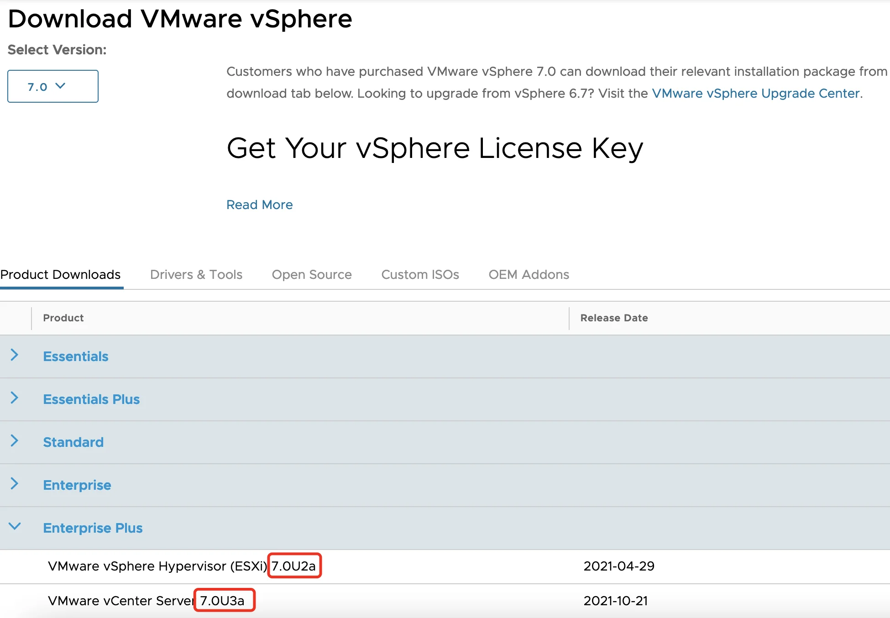

请访问原文链接：产品缺陷：请勿在生产环境中使用 ESXi 7 Update 3 查看最新版。原创作品，转载请保留出处。
作者主页：sysin.org
昨天，VMware vSphere 团队宣布因为产品缺陷从官网下架了 ESXi 7 Update 3 的下载，详见：Important Information on ESXi 7 Update 3。
从描述看来升级会产生问题，特别是会导致 HA 失败，全新安装的暂时没有问题（可能需要待新版本发布时重新安装或者升级）。
vCenter Server 7 Update 3 本身没有问题，不受影响，继续可用。
已经下载而未升级或者安装的用户，请等待下一个 ESXi 7 Update 3 的重新发布。本站也将更新所有相关产品 (sysin)。

有关 ESXi 7 Update 3 的重要信息
2021 年 11 月 19 日
从下载站点删除 ESXi 7 Update 3
部分客户在将环境升级到 ESXi 7 Update 3 版本时遇到问题。
经过仔细考虑，我们已从我们的产品下载站点中删除了 ESXi 7 Update 3 版本。我们做出此决定是为了保护我们的客户免受升级到 ESXi 7 Update 3 时可能发生的潜在故障的影响。虽然我们认为这只会影响有限的一组客户，但我们采取行动已经足够严重。当我们解决了 ESXi 7 Update 3 中的升级问题后，我们会通知我们的客户他们届时可能会继续升级到 ESXi 7 Update 3。有关潜在问题的更多详细信息，请参阅 知识库文章 86398。
我们的审查过程发现了合作伙伴驱动程序互操作性问题，这些问题导致某些升级路径无法在某些客户环境中完成。具体而言，驱动程序 VIB 更改导致 ESXi 中的命名冲突。这导致升级失败和相关的 HA 失败。不幸的是，我们的质量测试和认证过程忽略了这个问题。我们研究了通过补丁解决该问题的选项，但是，由于客户的某些操作复杂性 (sysin)，我们从我们的下载站点中删除了 ESXi 7 Update 3 版本。
请注意，VMware vCenter Server 7 Update 3 版本保持稳定且可用。客户可以继续下载并升级到此最新的 vCenter Server 版本。
对于已成功升级到 ESXi 7 Update 3 的客户，您可以继续使用此版本并获得 VMware 的全面支持。
我们将在驱动程序问题完全解决后立即重新发布 ESXi 7 Update 3 - 这涉及与我们的合作伙伴合作。当发布可用时，客户将通过我们的正常发布通知（包括此 vSphere 博客站点上的帖子）收到通知。
客户质量关注
VMware vSphere 用于最关键的客户环境，我们会认真对待任何逃脱的缺陷。除了提供更新版本外，我们还专注于这些持续改进：
- 我们有严格的根本原因和纠正措施 (RCCA) 流程，以不断确定我们可以在前进的基础上进行的质量改进。
- 我们将更新版本视为主要版本，并通过为每个更新版本发布知识库文章以及任何关键缺陷和解决方法的运行列表来让我们的客户了解情况。
- 我们还考虑通过发布内部和外部均可访问的质量指标来进一步提高后续版本的透明度。
信任是我们随产品提供的最重要的功能之一。VMware 致力于为客户提供优质体验，同时保护其数据和系统的完整性和安全性。
- Paul Turner 和 VMware vSphere 团队
更新
ESXi 7 Update 3 新版已经重新上架：

文章用于推荐和分享优秀的软件产品及其相关技术，所有软件默认提供官方原版（免费版或试用版），免费分享。对于部分产品笔者加入了自己的理解和分析，方便学习和研究使用。任何内容若侵犯了您的版权，请联系作者删除。如果您喜欢这篇文章或者觉得它对您有所帮助，或者发现有不当之处，欢迎您发表评论，也欢迎您分享这个网站，或者赞赏一下作者，谢谢！
 支付宝赞赏
支付宝赞赏  微信赞赏
微信赞赏赞赏一下
敬请注册！点击 “登录” - “用户注册”（已知不支持 21.cn/189.cn 邮箱）。 请勿使用联合登录（已关闭）。